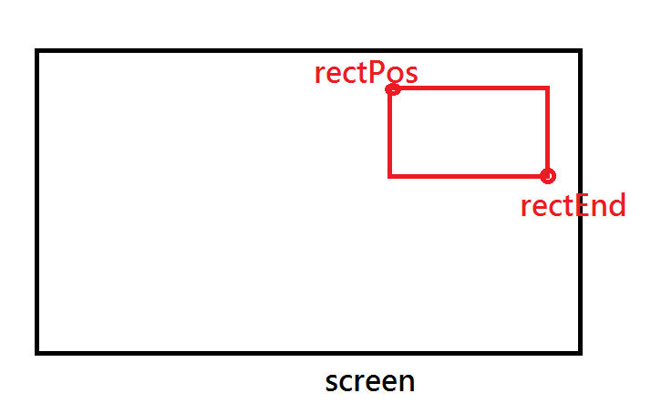
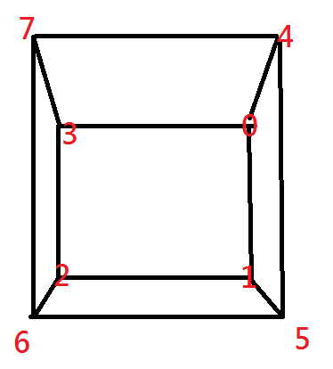

ab4daa
Hi,
I am trying doing typical RTS unit selection by dragging a rectangle on screen.

I saw the Frustum.c and thought I can manipulate vertices of camera frustum to be the frustum of the rectangle part.

The code is projecting the 4 points of the rectangle to near plane and far plane of camera frustum, then using projected points to form a new frustum for query.
It doesn’t work.
Could I know what’s wrong with it?
Thanks
IntVector2 rectPos;
IntVector2 rectEnd;
rectPos.x_ = Min(drag_start.x_, pos.x_);
rectPos.y_ = Max(drag_start.y_, pos.y_);
rectEnd.x_ = Max(drag_start.x_, pos.x_);
rectEnd.y_ = Min(drag_start.y_, pos.y_);
if (rectEnd.x_ > rectPos.x_ && rectPos.y_ > rectEnd.y_)
{
Graphics* graphics = GetSubsystem<Graphics>();
Camera* camera = cameraNode_->GetComponent<Camera>();
Frustum fr = camera->GetFrustum();
Ray lefttopRectRay = camera->GetScreenRay((float)rectPos.x_ / graphics->GetWidth(), (float)rectPos.y_ / graphics->GetHeight());
float dNear = lefttopRectRay.HitDistance(fr.planes_[PLANE_NEAR]);
float dFar = lefttopRectRay.HitDistance(fr.planes_[PLANE_FAR]);
fr.vertices_[3] = lefttopRectRay.origin_ + dNear * lefttopRectRay.direction_;
fr.vertices_[7] = lefttopRectRay.origin_ + dFar * lefttopRectRay.direction_;
Ray leftbottomRectRay = camera->GetScreenRay((float)rectPos.x_ / graphics->GetWidth(), (float)rectEnd.y_ / graphics->GetHeight());
dNear = leftbottomRectRay.HitDistance(fr.planes_[PLANE_NEAR]);
dFar = leftbottomRectRay.HitDistance(fr.planes_[PLANE_FAR]);
fr.vertices_[2] = leftbottomRectRay.origin_ + dNear * leftbottomRectRay.direction_;
fr.vertices_[6] = leftbottomRectRay.origin_ + dFar * leftbottomRectRay.direction_;
Ray righttopRectRay = camera->GetScreenRay((float)rectEnd.x_ / graphics->GetWidth(), (float)rectPos.y_ / graphics->GetHeight());
dNear = righttopRectRay.HitDistance(fr.planes_[PLANE_NEAR]);
dFar = righttopRectRay.HitDistance(fr.planes_[PLANE_FAR]);
fr.vertices_[0] = righttopRectRay.origin_ + dNear * righttopRectRay.direction_;
fr.vertices_[4] = righttopRectRay.origin_ + dFar * righttopRectRay.direction_;
Ray rightbottomRectRay = camera->GetScreenRay((float)rectEnd.x_ / graphics->GetWidth(), (float)rectEnd.y_ / graphics->GetHeight());
dNear = rightbottomRectRay.HitDistance(fr.planes_[PLANE_NEAR]);
dFar = rightbottomRectRay.HitDistance(fr.planes_[PLANE_FAR]);
fr.vertices_[1] = rightbottomRectRay.origin_ + dNear * rightbottomRectRay.direction_;
fr.vertices_[5] = rightbottomRectRay.origin_ + dFar * rightbottomRectRay.direction_;
fr.UpdatePlanes();
PODVector<Drawable *> results;
FrustumOctreeQuery query(results, fr);
scene_->GetComponent<Octree>()->GetDrawables(query);
URHO3D_LOGINFO(Urho3D::String("select ") + Urho3D::String(results.Size()) + Urho3D::String(" things"));
for (unsigned int ii = 0; ii < results.Size(); ii++)
{
URHO3D_LOGINFO(Urho3D::String("select ") + Urho3D::String(results[ii]->GetNode()->GetName()));
}
}